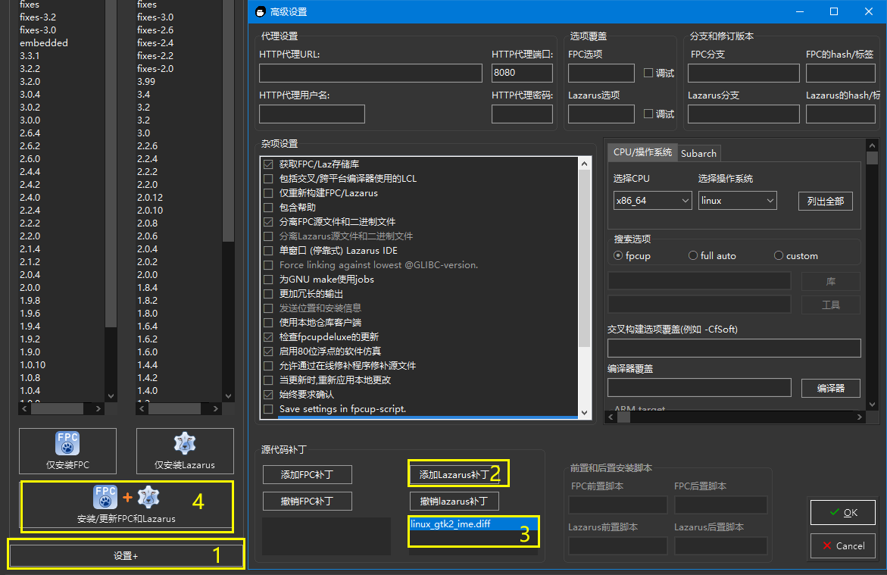
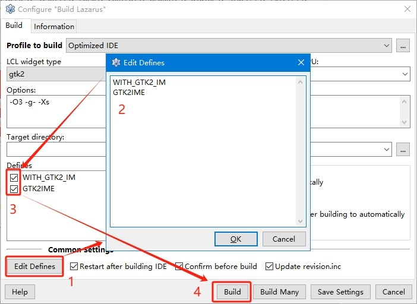

从其它平台迁移而来
| 项目 |
值 |
| 操作系统 |
Debian 12 |
| 桌面环境 |
xfce 4 |
| 输入法 |
fcitx 5 |
-
在Lazarus的代码编辑器中，快速录入时会出现连击现象
-
在Lazarus的代码编辑器中无法输入中文
问题1#
安装fcitx5-frontend-gtk2即可，详见fcitx5 issues #1006
问题2#
参照秋·风大佬中文输入法的解决方案。如果使用的是搜狗输入法的话，参照秋·风大佬搜狗输入法输入词组的解决方案。
补充1#
使用fpcupdeluxe安装Lazarus，源码修改后使用git diff生成补丁文件，后期升级Lazarus后若输入法不能用可直接应用补丁，避免重复修改。
1
2
|
cd lazarus
git diff > ~/linux_gtk2_ime.diff
|
如下图进行设置后，更新FPC+Lazarus即可。

以下是Lazarus 3.4的补丁文件内容。
1
2
3
4
5
6
7
8
9
10
11
12
13
14
15
16
17
18
19
20
21
22
23
24
25
26
27
28
29
30
31
32
33
34
35
36
37
38
39
40
41
42
43
44
45
46
47
48
49
50
51
52
53
54
55
56
57
58
59
60
61
62
63
64
65
66
67
68
69
70
71
72
73
74
75
|
diff --git a/components/synedit/lazsyngtk2imm.pas b/components/synedit/lazsyngtk2imm.pas
index 25b48fa0..02337318 100644
--- a/components/synedit/lazsyngtk2imm.pas
+++ b/components/synedit/lazsyngtk2imm.pas
@@ -2,6 +2,10 @@ unit LazSynGtk2IMM;
{$mode objfpc}{$H+}
+{$IFDEF LCLGTK2}
+ {$DEFINE WITH_GTK2_IM}
+{$ENDIF}
+
interface
uses
diff --git a/components/synedit/synedit.inc b/components/synedit/synedit.inc
index 5aa6930c..31edc908 100644
--- a/components/synedit/synedit.inc
+++ b/components/synedit/synedit.inc
@@ -19,6 +19,10 @@
{$MODE OBJFPC}
{$ENDIF}
+{$IFDEF LCLGTK2}
+ {$DEFINE GTK2IME}
+{$ENDIF}
+
{$DEFINE SYNEDIT_INCLUDE}
{$IFdef MSWindows}
diff --git a/lcl/interfaces/gtk2/gtk2globals.pp b/lcl/interfaces/gtk2/gtk2globals.pp
index 5821b5d6..396084a8 100644
--- a/lcl/interfaces/gtk2/gtk2globals.pp
+++ b/lcl/interfaces/gtk2/gtk2globals.pp
@@ -10,6 +10,10 @@ unit Gtk2Globals;
{$mode objfpc}{$H+}
+{$IFDEF UNIX}
+ {$DEFINE WITH_GTK2_IM}
+{$ENDIF}
+
interface
uses
diff --git a/lcl/interfaces/gtk2/gtk2proc.inc b/lcl/interfaces/gtk2/gtk2proc.inc
index 7c5fc7bc..a31d4dec 100644
--- a/lcl/interfaces/gtk2/gtk2proc.inc
+++ b/lcl/interfaces/gtk2/gtk2proc.inc
@@ -19,6 +19,10 @@
{off $DEFINE VerboseAccelerator}
{off $DEFINE VerboseUpdateSysColorMap}
+{$IFDEF UNIX}
+ {$DEFINE WITH_GTK2_IM}
+{$ENDIF}
+
{$IFOPT C-}
// Uncomment for local trace
//{$C+}
diff --git a/lcl/interfaces/gtk2/gtk2widgetset.inc b/lcl/interfaces/gtk2/gtk2widgetset.inc
index c66dfcdb..6f9a93d0 100644
--- a/lcl/interfaces/gtk2/gtk2widgetset.inc
+++ b/lcl/interfaces/gtk2/gtk2widgetset.inc
@@ -17,6 +17,10 @@
// {$DEFINE ASSERT_IS_ON}
{$ENDIF}
+{$IFDEF UNIX}
+ {$DEFINE WITH_GTK2_IM}
+{$ENDIF}
+
{$IFNDEF USE_GTK_MAIN_OLD_ITERATION}
var
Gtk2MPF: TGPollFunc;
|
补充2#
在Q群交流中，有群友提供了另一种解决方案，无需修改源码，且不限于使用fpcupdeluxe安装。

测试后发现，该方案有相当大的限制：仅限于Linux gtk2的本机环境编译，且不适用于交叉编译。